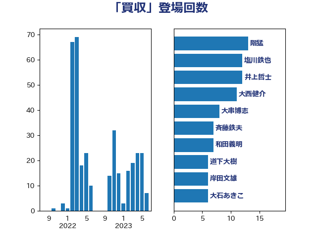

単語「買収」

| 階猛 | 立憲民主党 | 13 回 |
| 塩川鉄也 | 日本共産党 | 12 回 |
| 井上哲士 | 日本共産党 | 12 回 |
| 大西健介 | 立憲民主党 | 11 回 |
| 大串博志 | 立憲民主党 | 8 回 |
| 斉藤鉄夫 | 公明党 | 7 回 |
| 和田義明 | 自由民主党 | 7 回 |
| 道下大樹 | 立憲民主党 | 6 回 |
| 岸田文雄 | 自由民主党 | 6 回 |
| 大石あきこ | れいわ新選組 | 6 回 |
| 青山繁晴 | 自由民主党 | 5 回 |
| 松沢成文 | 日本維新の会 | 5 回 |
| 杉尾秀哉 | 立憲民主党 | 5 回 |
| 小林鷹之 | 自由民主党 | 5 回 |
| 宮口治子 | 立憲民主党 | 5 回 |
| 奥野総一郎 | 立憲民主党 | 5 回 |
| 城井崇 | 立憲民主党 | 5 回 |
| 北神圭朗 | 無所属 | 5 回 |
| 近藤和也 | 立憲民主党 | 4 回 |
| 打越さく良 | 立憲民主党 | 4 回 |
| 高橋千鶴子 | 日本共産党 | 3 回 |
| 金子恭之 | 自由民主党 | 3 回 |
| 神谷宗幣 | 参政党 | 3 回 |
| 田村貴昭 | 日本共産党 | 3 回 |
| 田村智子 | 日本共産党 | 3 回 |
| 泉健太 | 立憲民主党 | 3 回 |
| 斎藤アレックス | 国民民主党 | 3 回 |
| 岸真紀子 | 立憲民主党 | 3 回 |
| 岩渕友 | 日本共産党 | 3 回 |
| 吉田はるみ | 立憲民主党 | 3 回 |
| 古賀之士 | 立憲民主党 | 3 回 |
| 中野洋昌 | 公明党 | 3 回 |
| 豊田俊郎 | 自由民主党 | 2 回 |
| 若林健太 | 自由民主党 | 2 回 |
| 船田元 | 自由民主党 | 2 回 |
| 篠原孝 | 立憲民主党 | 2 回 |
| 石橋通宏 | 立憲民主党 | 2 回 |
| 石川昭政 | 自由民主党 | 2 回 |
| 玉木雄一郎 | 国民民主党 | 2 回 |
| 森本真治 | 立憲民主党 | 2 回 |
| 杉田水脈 | 自由民主党 | 2 回 |
| 星北斗 | 自由民主党 | 2 回 |
| 後藤祐一 | 立憲民主党 | 2 回 |
| 平山佐知子 | 無所属 | 2 回 |
| 山本太郎 | れいわ新選組 | 2 回 |
| 山岸一生 | 立憲民主党 | 2 回 |
| 小沢雅仁 | 立憲民主党 | 2 回 |
| 小山展弘 | 立憲民主党 | 2 回 |
| 大島敦 | 立憲民主党 | 2 回 |
| 仁比聡平 | 日本共産党 | 2 回 |
| 高良鉄美 | 無所属 | 1 回 |
| 高木真理 | 立憲民主党 | 1 回 |
| 高市早苗 | 自由民主党 | 1 回 |
| 音喜多駿 | 日本維新の会 | 1 回 |
| 長峯誠 | 自由民主党 | 1 回 |
| 鈴木義弘 | 国民民主党 | 1 回 |
| 鈴木敦 | 国民民主党 | 1 回 |
| 鈴木憲和 | 自由民主党 | 1 回 |
| 遠藤良太 | 日本維新の会 | 1 回 |
| 辻元清美 | 立憲民主党 | 1 回 |
| 赤池誠章 | 自由民主党 | 1 回 |
| 西村康稔 | 自由民主党 | 1 回 |
| 藤巻健太 | 日本維新の会 | 1 回 |
| 荒井優 | 立憲民主党 | 1 回 |
| 細田健一 | 自由民主党 | 1 回 |
| 福島伸享 | 無所属 | 1 回 |
| 福山哲郎 | 立憲民主党 | 1 回 |
| 石井浩郎 | 自由民主党 | 1 回 |
| 矢倉克夫 | 公明党 | 1 回 |
| 白石洋一 | 立憲民主党 | 1 回 |
| 田島麻衣子 | 立憲民主党 | 1 回 |
| 田中健 | 国民民主党 | 1 回 |
| 片山大介 | 日本維新の会 | 1 回 |
| 源馬謙太郎 | 立憲民主党 | 1 回 |
| 渡辺周 | 立憲民主党 | 1 回 |
| 河西宏一 | 公明党 | 1 回 |
| 永井学 | 自由民主党 | 1 回 |
| 櫻井周 | 立憲民主党 | 1 回 |
| 横沢高徳 | 立憲民主党 | 1 回 |
| 榛葉賀津也 | 国民民主党 | 1 回 |
| 梅谷守 | 立憲民主党 | 1 回 |
| 梅村みずほ | 日本維新の会 | 1 回 |
| 柴田巧 | 日本維新の会 | 1 回 |
| 柚木道義 | 立憲民主党 | 1 回 |
| 松本剛明 | 自由民主党 | 1 回 |
| 東徹 | 日本維新の会 | 1 回 |
| 本庄知史 | 立憲民主党 | 1 回 |
| 徳永エリ | 立憲民主党 | 1 回 |
| 後藤茂之 | 自由民主党 | 1 回 |
| 川崎ひでと | 自由民主党 | 1 回 |
| 岡田直樹 | 自由民主党 | 1 回 |
| 岡本あき子 | 立憲民主党 | 1 回 |
| 山田賢司 | 自由民主党 | 1 回 |
| 山田美樹 | 自由民主党 | 1 回 |
| 山添拓 | 日本共産党 | 1 回 |
| 山本剛正 | 日本維新の会 | 1 回 |
| 小沼巧 | 立憲民主党 | 1 回 |
| 宮本徹 | 日本共産党 | 1 回 |
| 太田房江 | 自由民主党 | 1 回 |
| 太栄志 | 立憲民主党 | 1 回 |
| 堤かなめ | 立憲民主党 | 1 回 |
| 嘉田由紀子 | 無所属 | 1 回 |
| 古賀友一郎 | 自由民主党 | 1 回 |
| 原口一博 | 立憲民主党 | 1 回 |
| 北村経夫 | 自由民主党 | 1 回 |
| 住吉寛紀 | 日本維新の会 | 1 回 |
| 中田宏 | 自由民主党 | 1 回 |
| 中川正春 | 立憲民主党 | 1 回 |
| 一谷勇一郎 | 日本維新の会 | 1 回 |